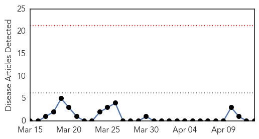
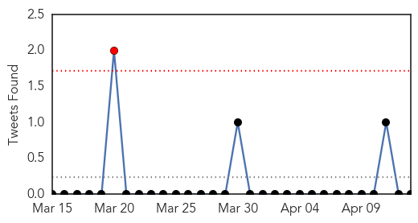
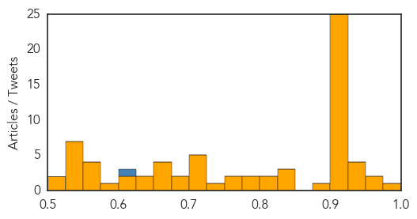

MERS
30-Day Web Trend
0 alerts, 0 warnings

30-Day Twitter Trend
0 alerts, 0 warnings

Article Locations

Article Confidences

Top Articles:
-
No articles found for Apr 13, 2015
Top Tweets:
-
No tweets found for Apr 13, 2015
Unknown
30-Day Web Trend
0 alerts, 0 warnings
30-Day Twitter Trend
0 alerts, 0 warnings

Article Locations

Article Confidences
Top Articles:
- 0.985
- Canberra Nursing Home Locked Down Due To Stomach Flu Outbreak
- 0.971
- Egypt’s Avian Flu Surge Lacks an Explanation
- 0.965
- NEPAL Nepal: Mystery virus kills 15 and infects 200
- 0.946
- All You Need To Know About E. coli
- 0.944
- Niger isolates suspected bird flu farm as region takes precautions
- 0.936
- Scientists say dog flu epidemic caused by strain not seen before in North America
- 0.933
- The vaccination debate: Hendra Virus
- 0.917
- Chicago Tribune
- 0.917
- Chicago Tribune
- 0.917
- Chicago Tribune
- 0.917
- Chicago Tribune
- 0.917
- Chicago Tribune
- 0.917
- Chicago Tribune
- 0.917
- Chicago Tribune
- 0.917
- Chicago Tribune
- 0.917
- Chicago Tribune
- 0.917
- Chicago Tribune
- 0.917
- Chicago Tribune
- 0.917
- Chicago Tribune
- 0.917
- Chicago Tribune
- 0.917
- Chicago Tribune
- 0.917
- Chicago Tribune
- 0.917
- Chicago Tribune
- 0.917
- Chicago Tribune
- 0.917
- Chicago Tribune
- 0.917
- Chicago Tribune
- 0.917
- Chicago Tribune
- 0.917
- Chicago Tribune
- 0.917
- Chicago Tribune
- 0.917
- Chicago Tribune
- 0.910
- The world windows to Thailand
- 0.910
- The world windows to Thailand
- 0.891
- Healthy populace for a healthy nation
- 0.846
- U.S. finds 1st case of lethal bird flu in commercial chicken flock
- 0.828
- Gaza authorities cull 800 chicken infected with bird flu - Xinhua
- 0.826
- The threat of CWD in the Estes Valley
- 0.817
- U.S. finds first case of lethal bird flu in commercial chicken flock
- 0.811
- Board to look after burnt patient
- 0.788
- Board to oversee Nauman’s treatment
- 0.786
- Cluster of HIV cases grows in Indiana
- 0.770
- Libya: Lack of personnel and resources threaten health service collapse
- 0.761
- TB remains a public health concern, health officials
- 0.745
- Can you and your dog share the norovirus?
- 0.718
- Suspected Norovirus outbreak on cruise ship
- 0.715
- More than 200 sickened on cruise ships
- 0.710
- 100 sick onboard Celebrity cruise ship
- 0.708
- Effective workforce stressed for better healthcare in Punjab
- 0.704
- The eye condition that is turning into a major cause of blindness
- 0.697
- ‘New polio virus’ found in Multan Road drain
- 0.689
- PAHO’S DIRECTOR AND PANAMA’S HEALTH MINISTER RAISE HOPES FOR REFORM OF COUNTRY’S HEALTH CARE
Showing top 50 articles...
Top Tweets:
- 0.840
- Read CDC's statement on the Canine Flu (Dog Flu) outbreak in the Chicago area: http://t.co/HDe4aA9rf8
- 0.555
- RT: It's always flu season somewhere in the world MT: FluShotNow Be Flu Smart http://t.co/RY00Xk8ujF
- 0.501
- Dog Flu Outbreak Caused by Strain Not Seen in U.S. http://t.co/7ajSMcDqQI